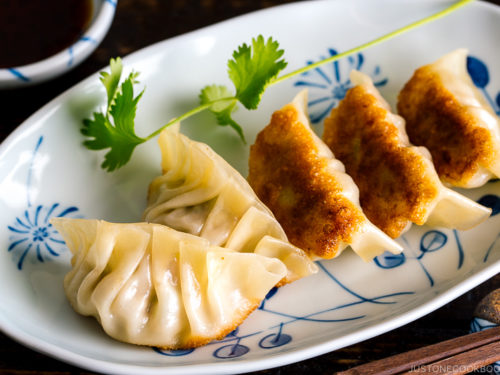

Gyoza

Description
Gyoza (餃子, gyōza) are dumplings filled with ground meat and vegetables and wrapped in a thin dough. Also known as pot stickers,
gyoza originated in China (where they are called jiaozi), but have become a very popular dish in Japan. It was a version brought back by Japanese soldiers returning
from the Japanese-backed puppet state of Manchukuo in northeastern China during World War II
Ingredients
Filling
- 1 1/2 cups green cabbage, very finely chopped
- 1 tsp salt, separated
- 1 lb / 500g ground pork (mince) (fattier the better)
- 1 cup garlic chives, finely chopped
- 1 garlic cloves, crushed
- 1 tsp ginger, grated
- 1 tsp sesame oil
- 1 tbsp cornstarch / corn flour
- 2 tsp soy sauce
Gyoza wrapper
Dipping sauce
- Soy sauce
- Rice wine vinegar
- Chili oil (Rayu is Japanese chili oil)
Steps
- Prepare the ingredients. Chop the chives and cabbage. Peel and devein the shrimp, and grate your ginger and garlic.
-
- Combine the beef, shrimp, cabbage, ginger, garlic, salt, white pepper, and the oils into a large bowl.
-
- Mix everything together well with your hands, making sure the mixture isn't lumpy or uneven. Place the bowl into the refrigerator, and then leave it for about 10 minutes.
-
- Take a gyoza wrapper and place a small spoonful of the mixture in the middle. Dab a little water on one half of the wrapper's edge and securely fold in two to make a semi or half circle. While folding, pinch the two sides together like a Ziploc bag and create waves while pinching.
Repeat this step for all the wrappers. This is called "crimping", the way to seal up the edges of the dumpling.
-
- Oil and heat a skillet on the stove. Put it on medium heat and carefully drop a few dumplings into the skillet at a time, but be sure not to overload the skillet with everything.
-
- Fry the dumplings for about two minutes, then reduce the heat.
-
- Add about half a cup of water to the skillet and cover it with a pan lid. Steam the dumplings until the water has evaporated or boiled off and then remove the food from the heat.
-
- Place the dumplings onto a plate or serving bowl and serve with dipping sauce or soy sauce (shoyu). Gyoza dumplings are mainly served with a soy based tare sauce,
which you can season with rice vinegar. The dumplings are best served while still steaming hot.